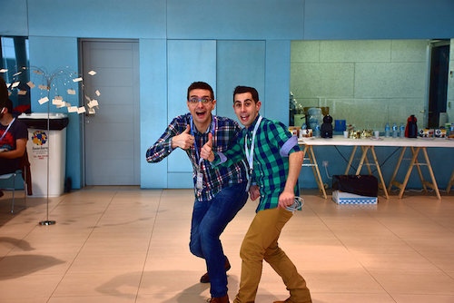
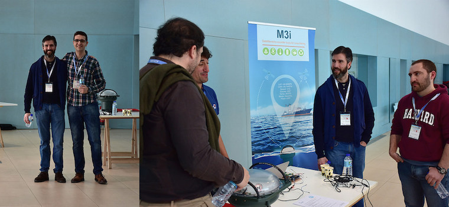
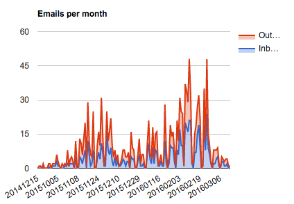
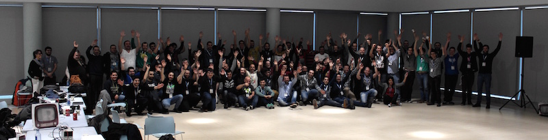

Como algún ben sabedes estaba involucrado xunto con Jesús na Hackathon Sanjurjo Badía. Gustaríame facer unha reflexión persoal e "en voz alta", dado que creo que é importante compartir este tipo de información.
Sobre a hackathon, non vou comentar nada mais do que xa esta escrito nas seguintes crónicas:
O primeiro que me gustaría dicir, e pedir perdón. Perdón a patrocinadores e asistentes polos problemas de conexión a internet do sábado. Para evitar problemas cun router pequeno, puxemos un firewall profesional diante, que xestionaba todo o tráfico da wifi. Pero unha das cousas que se me esqueceu facer foi configurar unha DMZ a ese router, polo que o router de internet, cando chegaba a 15000 portos NAT abertos, broqueaba a conexión. O meu erro polo que pido desculpas a todo o mundo.
O segundo: gustaríame darlle as grazas o meu compañeiro Jesús Sayar, un auténtico fenómeno, que fai que organizar un evento de este tipo sexa moito mais sinxelo. Tamén acordarme de toda a sua familia que se encargou do catering do evento.
O terceiro, agradecer a esas persoas que eu chamei, que botaron unha man, pero que non estaban nos créditos. Persoas que deron boas opinións, se involucraron, e persoas que sempre tiveron un "SI A TODO" cando lle chamaba. Aquí tedes a lista:
- O xefe do departamento de informática do Concello de Vigo. Por que fixo todo o posible, traballou horas extras, durante as vacacións, para que esta hackathon fora realidade.
- O concello de Vigo, dado que o fácil sería dicirnos que isto era unha idea loca, ou unha fricada. Resultou todo o contrario e volcaronse con nós para que fora realidade.
- A Luis Miranda, que ademais de ser unha persoa que axudou a lanzarnos ca idea, foi de esas persoas que colaborou en todo o posible, e traballou arreo para que todo estivera perfecto.
- A Edu de Ultreia, dado que o seu SI A TODO non ten fin, cada vez que lle pedía consello era unha mellora, cada vez que lle pedía unha favor sempre foi unha solución. Xente como Edu fai que organizar este tipo de eventos sexa un pracer.
- A Bruno Lema de Marine Instruments, coñecino nunha reunión para ver se Marine podía patrocinar. Ademais de escalar o patrocinio, Bruno involucrouse persoalmente, algo que lle estamos moi agradecidos.
- A todos os patrocinadores, dado que patrocinar un evento de este tipo non é polo retorno económico, se non que é por mellorar o ecosistema da nosa cidade. Polo tanto moitas grazas a todos.
- A Quobis: Toda a axuda que eles nos deron, dende cruzar algúns emails con algúns patrocinadores, ata deixarnos todo o que podían axudar. Unha pena que estiveran no MWC e que puideran estar durante todo o fin de semana no evento.
En canto a hackathon, cando empezamos a lidar esta hackahton, tiña varios obxectivos persoais, que sendo realista, non cumprín como me esperaba!
Sanjurjo Badía
Varios amigos (non vigueses) sempre menosprezan Vigo, algo que me repudia, unha cidade que ten séculos de historia, pero que nunca fai valer o que nela se viviu. Fomos clave na Reconquista (Que é mais que unha festa de chouripáns), aparece a cibdade nos libros de Xulio Verne, temos grandes inventores, obxectivo clave se entrabamos na segunda guerra mundial, etc.. . Pero para moitos vigueses, Sanjurjo Badía é soamente o nome dunha rúa, e iso é algo que me daña o corazón.
Poñer el valor a Sanjurjo Badía, as súas habilidades pra levar a industrialización o sector marítimo. Este enxeño era a crave para fomentar nesta hackathon a tecnificación no sector marítimo.
Teño a impresión, despois da hacakthon que a figura de Sanjurjo non quedou de todo salientada, algo que me queda moita pena. Sanjurjo merece en Vigo moito mais que o nome dunha rúa.
Tecnoloxía no mar
Algo que levo pensando anos, algo que Vigo ten que ter como prioridade número un, pero que por desgraza non existen plans sólidos ou consensuados para levar isto a cabo. Cando nos reunimos con David Regades(Concexal de Fomento), este non dubidou nin un minuto en colaborar con nós. Agora toca darlle a continuidade necesaria.
A idea de tecnoloxía no mar era complexa, demasiado! Levamos décadas que os vigueses non pensamos en dicirlle aos nosos fillos dedícate o mar. E mais cando estaba no instituto todo o mundo me menosprezaba cando dicía que eu de maior quería ser arquitecto naval. Hai que cambiar iso! levamos séculos vivindo do mar, non ten sentido cambiar o noso sistema produtivo onde a nosa situación xeográfica non e clave, o mar ten que ser parte primordial do noso futuro. Por iso cando pensaba nesta hackathon víñame a cabeza un poema de Eduardo Pondal, que di tal que así:
Non cantes tan tristemente,probe e desolada nai;non lle cantes cantos brandospra adormecer o rapaz;onde está a cova do sono,no céltico carballal;cántalla cantos ousadosque esforzado o peito fan;cántalle o que xa cantarao nobre bardo Gundar;A lus virá para a caduca Iberia,dos fillos de Breogán!
O que tiña claro que nesta hackathon tiñamos que seguir a Pondal, e cantar un conto ousado que marcara un camiño. Creo que a idea de IoT e o Mar foi un conto ousado, que deu resultado e todos os asistentes sentiranse confortables a facer solucións hardware para o mar.
Mentores
Unha das cousas que traballamos arreo foi nos mentores, queriamos contar con todos os axentes do sector. Era clave que ademais de que os asistentes viran o mar como solucións válidas, tamén os axentes do sector (estaleiros, armadores, auxiliares, etc.. ) miraran que aquí tamén se poden facer cousas, o que tiña a impresión que melloraría a sua impresión sobre os informáticos galegos.
En Decembro fixemos unha reunión de 15 persoas, nunha sala onde estaba estaleiros, auxiliares é uns cantos informáticos, a reunión deunos as ideas iniciais, e ese foi o noso punto de partida.
Inda que había mentores, por desgraza non había todos os que nos queríamos. Pero expricar isto foi algo moi compricado e ademais da pouca xenerosidade que nos proporcionaba as nosas chamadas ou email.
Todos os informáticos temos que facernos valer ante os sectores marítimos, aportarlle ideas, educarse sobre o que fan e intentar tender pontes que poden marcar o futuro da cidade. Eles saben traballar o ferro e coñecen o mar, os informáticos sabemos facer sistemas intelixentes, fagamos pontes para que Vigo sexa a capital de solucións tecnolóxicas do sector marítimo.
Esta hackathon xa queda pechada, moito traballo, moitos meses e mais ilusión depositada nela. Para que vos fagades unha idea, esta é a gráfica de correos enviados e recibidos no meu correo electrónico ca etiqueta da hackathon.
Por outra parte gustaríame salientar dúas cousas que non me gustaron nada, e fan que me prántexe seguir con isto:
- No evento, 22 persoas non apareceron, e quedou xente na lista de espera. Unha auténtica pena. Moito traballo, moita xente na lista de espera, e cando o custo por participante era de 40€, foron 800€ mal gastados. Non vós podedes imaxinar o que custa conseguir eses 800€, hai que ter conciencia polo traballo do resto.
- Un dos medos que tiñamos era a devolución das pracas Udoo, de todas as que tiñamos en réxime de alugueiro volveron todas. Pero por desgraza alguén roubou unha na mesa de Udoo non rexistrada, algo que me deixa MOI mal sabor de boca.
- Despois de 16 chamadas a TVG, decidiron que era moito mais importante entrevistar a un home que foi a un prostíbulo, se emborrachou e caeu nun pozo, en vez de fomentar a innovación do mar. Unha auténtica pena :-(
Teño que dicir que de todos os eventos nos que algún día eu estiben metido, este foi o que mais me reconfortou, non soamente polo resultado, se non por que creo que se cumpre o que algún día dicía Alfredo Brañas polo século XIX
As nogueiras e castiñeiros que dan hoxe noces e castañas non as prantáchedes vosoutros. Foron vosos avós. Eles o fixeron acordándose de vosoutros e para vosoutros. Tendes a obriga de face-lo mesmo. E se ademais de árbores que dean froito deixades en herdo aos vosos unha terra libre e rica, dentro do Estado español, faredes unha santa e redentora obra”
Nós xa prántamos o nosa nogueira, se todo segue o camiño natural, o equipo gañador vai formalizarse nunha empresa. Isto é un orgullo para nós, dado que son catro rapaces que podían ser carne da emigración en calquera momento, pero van a focalizarse nun produto e mellorar a arte da pesca local, unha solución para venderlle aos nosos veciños!
Anímovos a fomentar empresas tecnolóxicas no mar, e facer o que algún día se fixo en Galicia a finais do século XX. Onde un viño que cultivaban catro frades no mosteiro de Armenteira, chamado Albariño, con esforzo, orgullo e valentía duns poucos converteuse nun dos viños de referencia a nivel mundial, con selo galego.
Xa rematando, para poñer en valor os proxectos da hackathon. Michelangello de Udoo, que o seu principal traballo é estar en hackathons de medio mundo, quedou alucinado ca calidade técnica dos proxectos. Parabéns a todos os participantes, non tiña dúbida de isto, pero é bo que quede reflexado.
O verdadeiro heroísmo está en convertir os anceios en realidades, e as ideas en feitos. -- CASTELAO
Graciñas a todos!